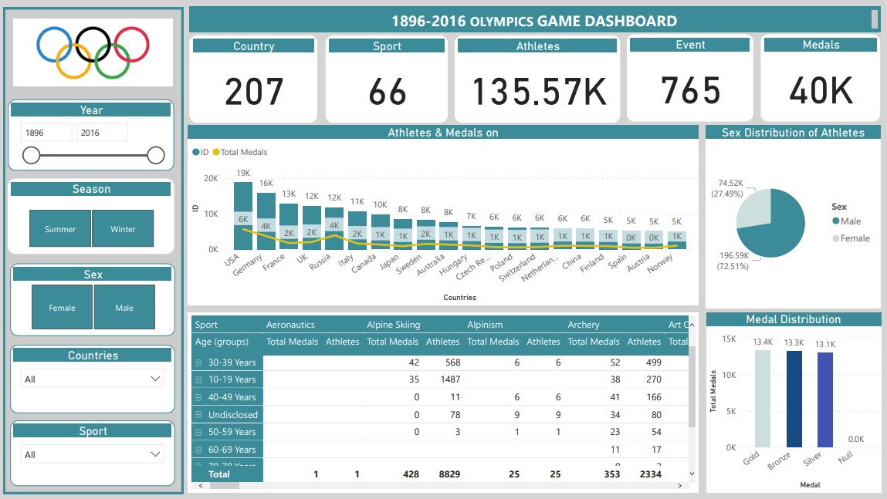

CYI Business Dashboard
A young company which wanted to leverage on the benefits of data driven decisions, CYI wanted answers to certain questions.
The dashboard shows sales by month and states, the rate of returns each day and quantity customers were buying. Through this analysis, the
company was able to also know how satisfied their customers are with services. this information enabled them to make changes in other to improve their
service delivery.

Proton Sales
Dashboard created to analyse sales trend for this company based on selected KPIs. Various data were provided and many
others had to be generated based on the the data available. This dashboard gives a quick glance of the performance of the company, the revenue generated, performance of various staff and the rate at which various products were sold. Seasons when
certain products sell the most is highlighted, to help the marketing team target certain customers at particular time of the year.
This is targeted at improving sales and promotions.

1896-2016 Olympics
This is Olympics games Dashboard between 1896-2016. After understanding the data, I proceeded to transforming the data in order to make it easier to work with.
The Dashboard created gives insight about the Countries that have participated, and in which sports, the total number of
Athletes, the Medals won and the distribution based on the type of Medals won. It is interesting to find out the age range which
have won the most Medals over the years

Deezee Intl. Dashboard
This sales trend dashboard is to see at quick glance the performance of this comapany. The revinue generated can easily be seen by using the slicers
to see particular scenerios. I started of the project by first cleaning the data, and using the available data to generate more information
which is used to create more insight.